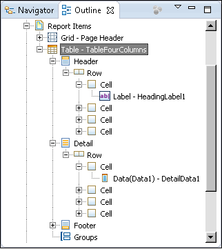

Creating an element in a library uses the same wizards and dialogs as creating an element in a report design. After you add an element to a library, you make changes to it in the same way as you do in a report design.
Open or create a library. Using Data Explorer, create any required data sources, data sets, data cubes, and report parameters. To add a report item, drag an item from the palette to Report Items in Outline. The new item appears both in Report Items and in the layout editor, as shown in Figure 19-1.

To add a style, in the Outline view, expand the Themes node. Right-click a theme. Then, choose New Style.